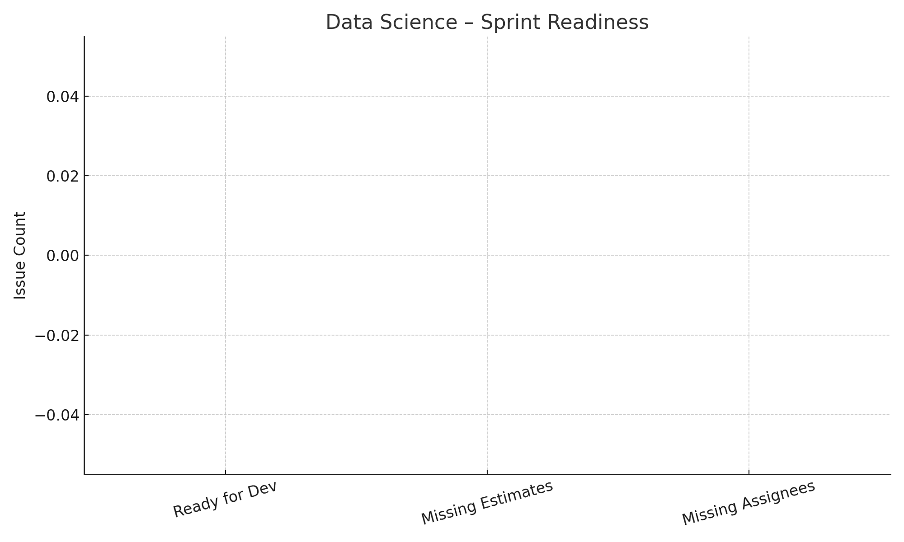
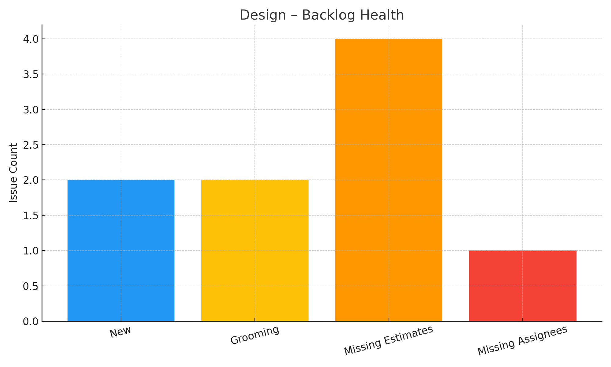
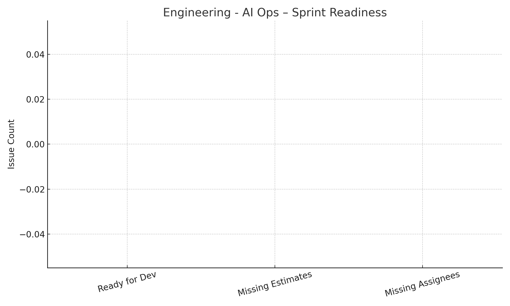
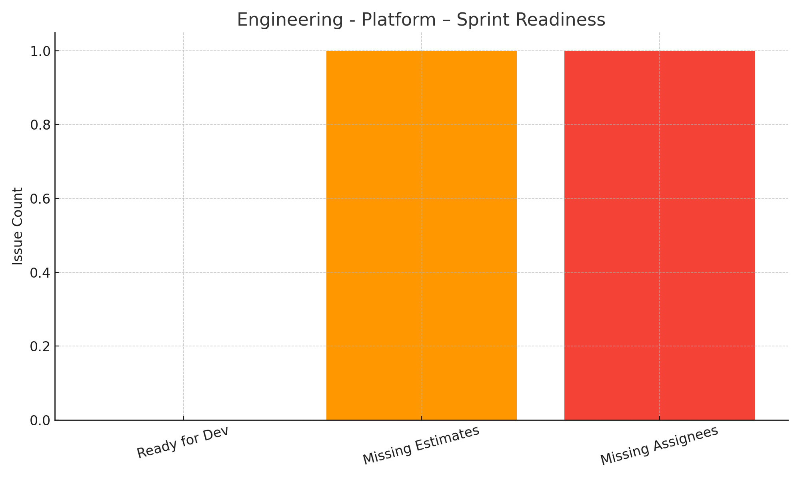
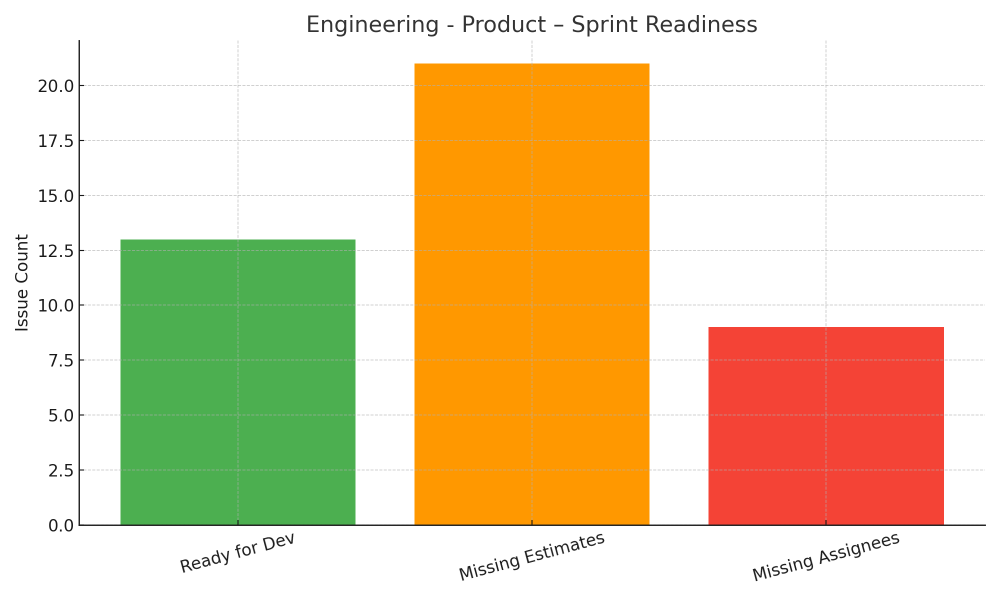
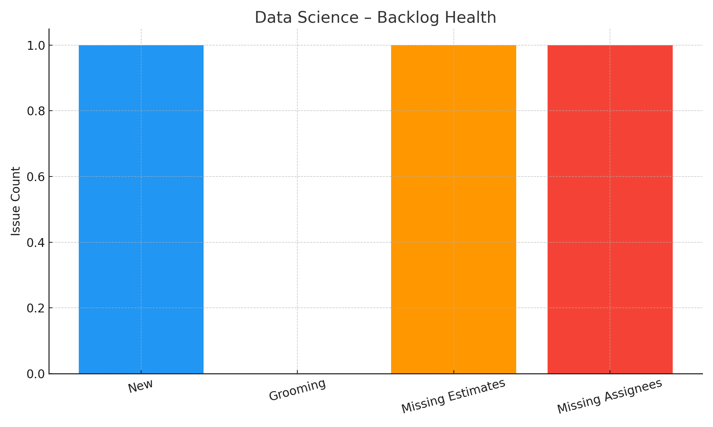
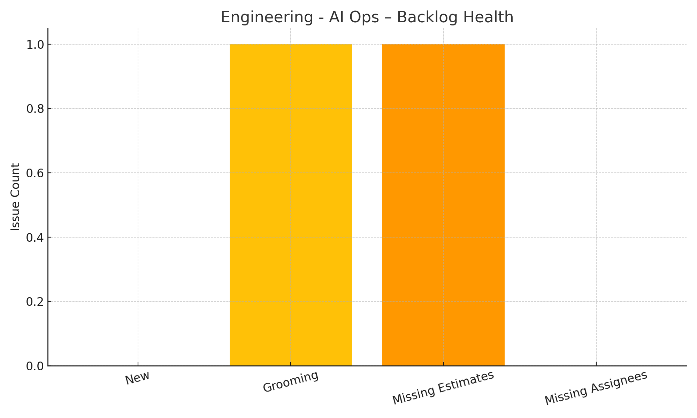
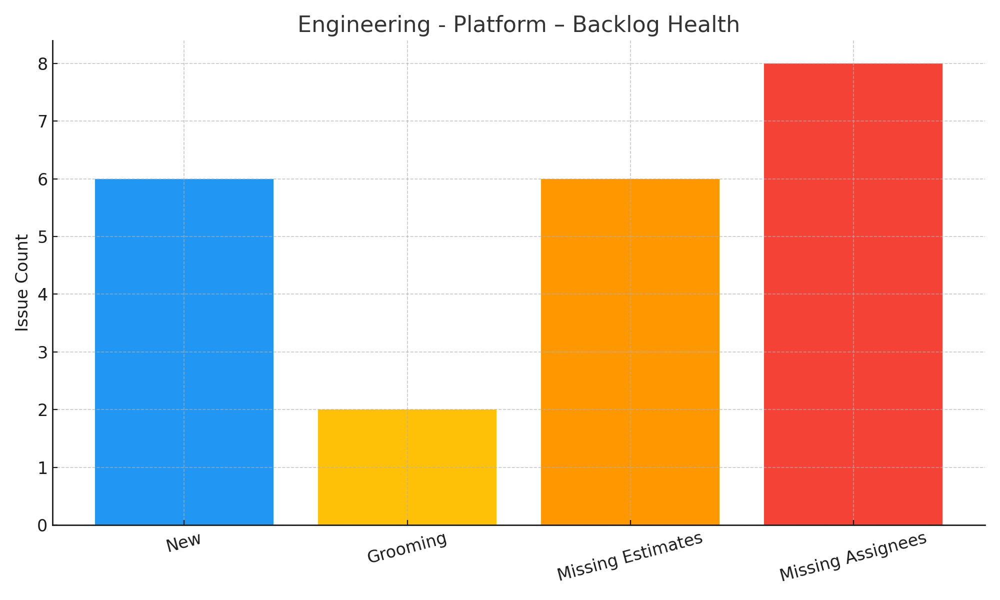
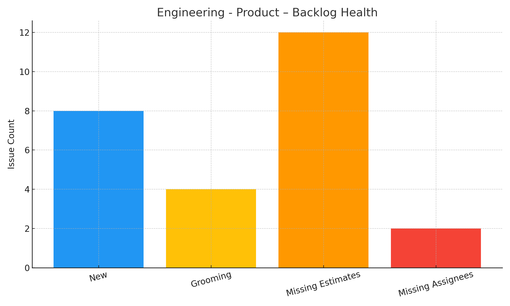

Overall Program Status

25% Health
Avg Readiness: 9.0% | Avg Grooming: 41.7%
Last Updated: 2025-05-22 06:46 PM
Sprint Readiness
Data Science

This chart shows the percentage of stories in future sprints that are fully defined (story points, owner, and description). Readiness is calculated as (# Ready / Total).
Design

Readiness for Design reflects grooming maturity across future sprints. Yellow or red zones mean stories are still being defined or are missing key info.
Engineering – AI Ops

This team's readiness includes only stories in future sprints with required fields. Blank or missing values signal lack of grooming completion.
Engineering – Platform

This report measures platform stories that are development-ready based on complete definitions and ownership.
Engineering – Product

Readiness is calculated using only tickets in the 'Ready for Development' status. Lower scores indicate grooming gaps or missing estimates.
Backlog Health
Data Science

This chart breaks down stories not assigned to a sprint by grooming status: New, Grooming, or Ready for Dev. A high % in 'Ready' means healthier backlog.
Engineering – AI Ops

Backlog Health is based on non-slotted tickets. The more tickets in 'Ready for Dev', the closer this team is to sprint readiness.
Engineering – Platform

This shows grooming status of all non-sprinted Platform tickets. Incomplete stories or no estimates lower overall backlog health.
Engineering – Product

Product backlog readiness reflects future prioritization. High 'New' counts indicate stories need refinement before they're sprintable.